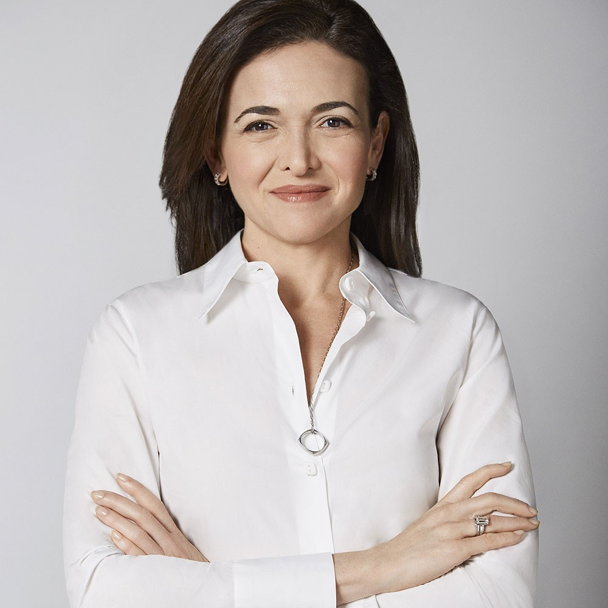

Sheryl Sanberg
3rd March 2018
When you walk into Facebook's Menlo Park, California, offices, the posters bombard you: "Let's Kick the Shit Out of Option B." It has the ring of a corporate mantra, à la "Move fast and break things," Mark Zuckerberg's famous exhortation to his colleagues. But it's something far more personal--a quote used by Facebook's second-in-command, Sheryl Sandberg. Already one of the most admired executives in America, thanks to Lean In, her 2013 female-ambition manifesto, Sandberg became a different kind of symbol in May after the sudden death of her husband, SurveyMonkey CEO Dave Goldberg. Facebook's COO had often credited her professional success, in part, to her supportive partnership with Goldberg. Together they were the model Silicon Valley power couple. It turns out Sandberg's "Option B" line is from a raw, public Facebook post she wrote a month after her husband died, about coping with grief after the loss of "Option A," the life she had expected to share with Goldberg. The post has been shared almost 400,000 times.
On a steamy August afternoon, Sandberg is dealing with the tragedy the best way she knows how--by throwing herself back into her work. She's in a conference room at the center of Facebook's new 430,000- square-foot Building 20. Like her boss, Sandberg has an open-plan desk. But it's clear by the pool of personal effects at the head of this conference table--lip balm, hand weights, a jumbo Diet Coke, and a rubber physical-therapy rod that she uses to treat the wrist pain she developed while writing Lean In hunt-and-peck style--that this is where Sandberg spends most of her days in back-to-back meetings. She'd like to learn to type, she says, but who has the time? After Goldberg's death, she took on yet another commitment by joining the board of SurveyMonkey. If the rumor mill had its way, she'd be busier still; she's always being touted as a candidate for some political office or CEO gig.